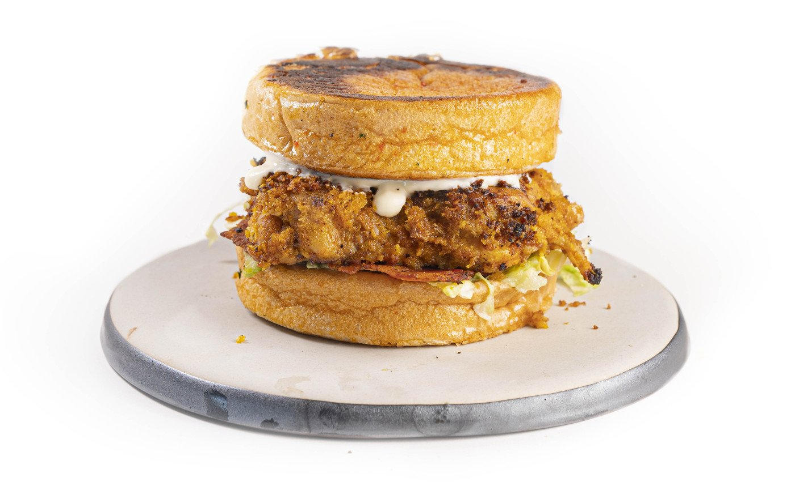

This is why you should try our Chicken Sandwich
If you're in the mood for a mouth-watering grilled chicken dish,
this recipe for crispy grilled chicken on a flat top griddle is just what you need!
It's the easiest way to get that crispy fried chicken flavor in a BBQ grilled way.
Ingredients
- 800 grams / 1.8 lbs chicken thighs
- 1 tbsp table salt
- 1 tbsp paprika powder
- 1 tbsp onion powder
- ½ tbsp garlic powder
- ½ tbsp kurkuma powder
- 300 ml / 1¼ cup sunflower oil
- 5 chili peppers
- 7 cloves of garlic
- 20 grams / 0.7 oz fresh parsley
- ½ tbsp black pepper
- 180 grams / 6.3 oz panko breadcrumbs
- 8 soft white biscuit bun
- 400 grams / 14 oz bacon strips
How to..
- Grab a bowl and mix 1 tbsp salt with 1 tbsp paprika powder, 1 tbsp onion powder,
½ tbsp garlic powder,½ kurkuma powder and 250 ml/1 cup of sunflower oil
- Mix the marinade together with your chicken thighs and let it marinade for at least 4 hours.
- ire up your flattop griddle and start blackening some chili peppers and some whole cloves of garlic.
- After they have been charred, blend them until they form a uniform, creamy paste.
- Warm a small pan and add the paste, along with freshly chopped parsley, salt, and pepper.
- Fry until the orange hue turns into a darker, brownish-orange color.Weave together six slices of bacon.
- Clear the griddle plate and lower one of the three burners to medium heat. Prepare a bowl of panko.
- Dip the chicken thighs in the panko for a light coating, then place them on the hot griddle plate.
- Add plant-based oil to the grilling chicken.
- Cook until a dark golden-brown crispy crust forms on all sides, then add some chili oil for flavor.
- Make sure the chicken reaches a core temperature of 75°C/170°F by letting it continue to cook on the cooler side.
- Render the braided bacon strips.
- Once all the thighs are cooked, place the buns on the griddle plate and drizzle them with some chili pepper oil.
For this recipe,Dutch biscuit buns, which are soft bagel-like buns, are used.
- Built up your sandwich with some sauce on the bottom side of the bun,